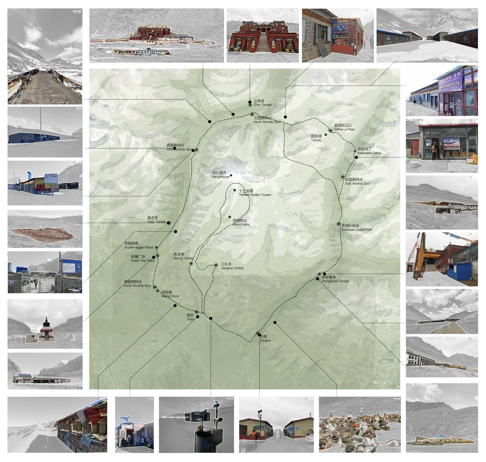
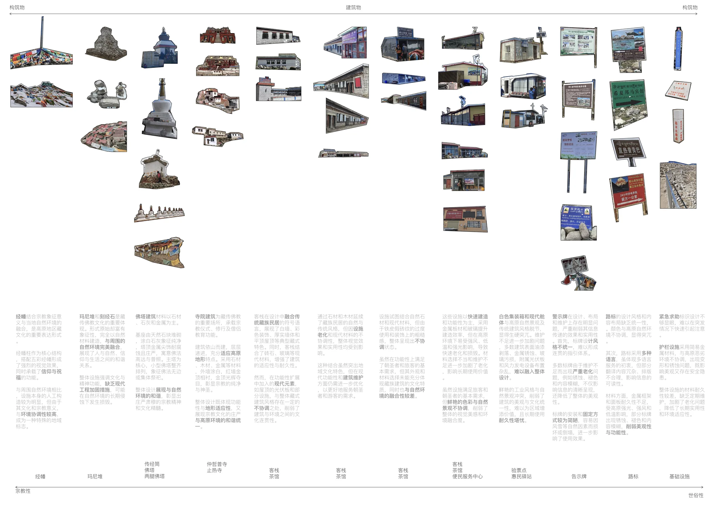
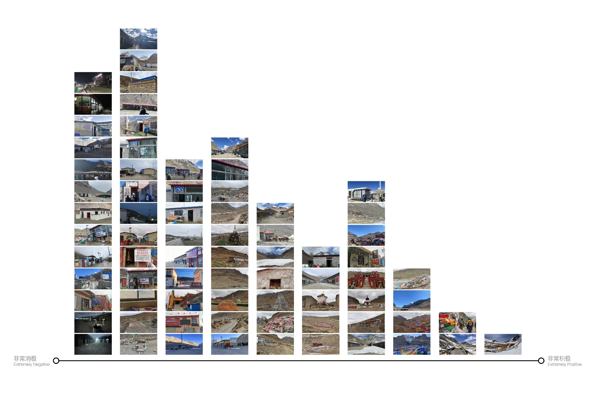
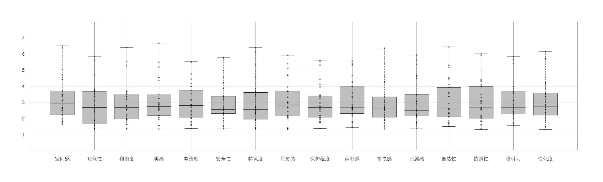
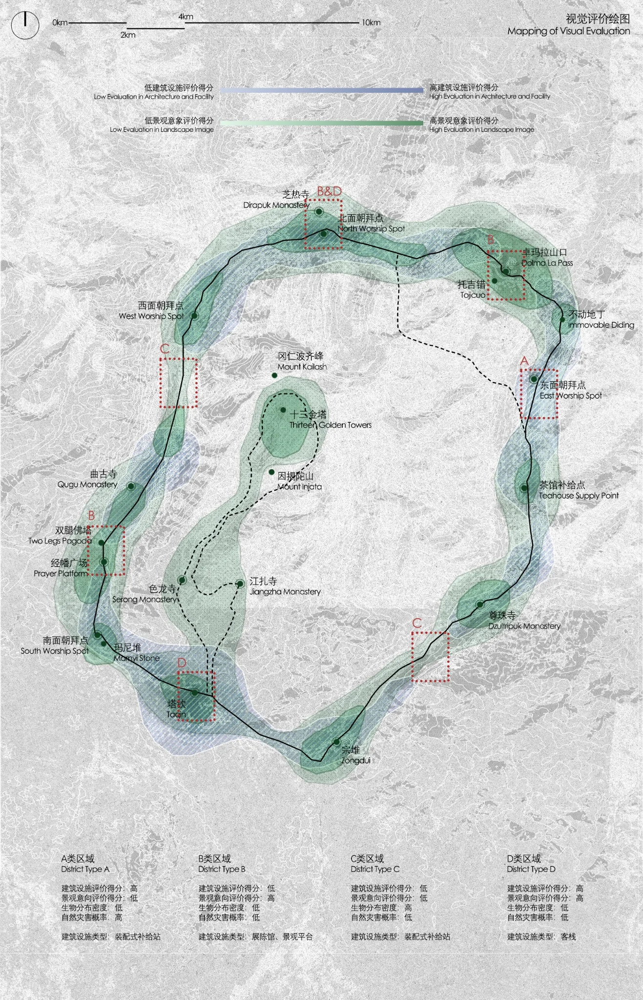
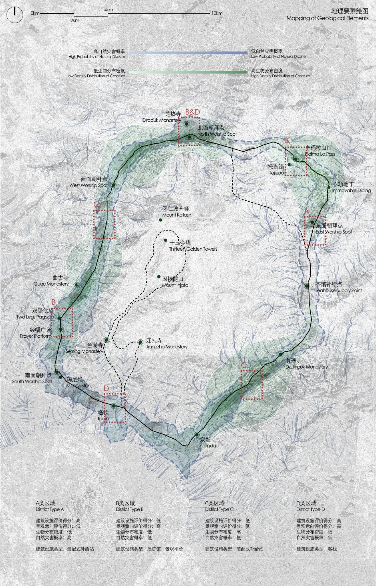

Reading the Sacred Landscape
Ritual, Perception, and Material Presence Along the Mount Kailash Kora
The kora is not a single view of a sacred mountain. It is a sequence of movement, devotion, encounters, and everyday infrastructures.
Mount Kailash is significant to Buddhists, Hindus, Jains and followers of Bön. Its meaning is experienced through circumambulation: moving between monasteries and worship points, crossing difficult terrain, encountering religious objects and depending on the ordinary facilities that sustain the journey.
This research brings together photographic inventories, route mapping, landscape-image analysis, visual evaluation and environmental records. It asks how these different forms of evidence help describe a sacred landscape, while acknowledging what photographs and quantified scores cannot explain.
Research question
How do ritual practices, built structures, visual perception and environmental conditions collectively shape the experience of the Mount Kailash pilgrimage landscape?
The kora as a spatial sequence
The journey is punctuated by places of differing significance: monasteries, worship points, the Drolma La Pass, settlements, rest locations and temporary shelters. Some are marked by repeated ritual practice; others arise from the immediate demands of walking, altitude, weather and supply.
A route-wide photographic inventory places existing structures, objects and everyday facilities in their geographical context. The distribution is uneven, with concentrations around established passages and stopping points. A second reading draws on 1,729 geolocated social-media images, using kernel-density analysis and Kevin Lynch’s five landscape-image elements—paths, edges, districts, nodes and landmarks—to investigate the geography of recorded photographic attention.


The map is a record of documented places, not a complete account of sacred value. A frequently photographed location is not necessarily more important to pilgrims or custodians than one that appears less often in the archive.
A spectrum of material presence
Along the same journey, prayer flags, mani stone assemblages, stupas and monasteries coexist with guesthouses, shops, shelters and directional signs. The inventory compares these existing elements by function, construction, material, visibility and relationship to the surrounding terrain.
Mani stones & prayer flags
Accumulated offerings and material traces of repeated devotional practices.
Stupas & monasteries
Recognisable destinations, thresholds and centres of religious activity.
Guesthouses & shops
Accommodation, exchange, supplies and seasonal occupation along the walk.
Signs & service markers
Directional information, safety notices and visible traces of maintenance.


These categories make relationships visible without fixing every object within a binary opposition. A guesthouse may remain part of a ritual journey, while a modest stone assemblage can carry significance far beyond its physical scale. The same corridor is at once devotional and inhabited.
Measuring perception, reading disagreement
Physical distribution does not explain how a place is experienced. The team therefore combined photographic evaluation with 103 returned semantic-differential questionnaires. The instrument considered spatial quality, functionality, harmony, beauty, cleanliness, safety, distinctiveness, historical association, perceived naturalness and other attributes of the existing landscape and facilities.
The photographic ranking places documented scenes along an evaluation spectrum, making visible contrasts among ritual markers, built facilities, signs and mountain environments. The boxplots record variation as well as central tendencies. Many evaluated qualities cluster around the centre of the scale; dispersed answers should not be simplified into a claim that the entire landscape is liked or disliked.




The study reported comparatively positive evaluations of religious landmarks and comparatively negative evaluations of certain secular facilities within its sample. These responses reflect respondents’ perceptions, not a judgment from every pilgrim, resident or religious custodian. Visual preference must also be distinguished from necessity, practical function and sacred meaning.


The environmental gradient of pilgrimage
The kora traverses markedly different conditions. Valleys, mountain runoff, fragmented ground, high passes, sparse vegetation and alpine meadows change the physical experience of movement. Visibility, exposure and the presence of water or shelter vary across the journey and with the seasons.
Environmental overlays compare terrain, route networks, vegetation, documented wildlife encounters and preliminary indications of geological and natural hazards. These are different classes of evidence: a wildlife photograph establishes a recorded encounter, not population density; a mapped hazard indicator does not establish the probability of danger at a particular structure.


Because the pilgrimage crosses these changing environmental zones within a single ritual sequence, no one photograph, route segment or land-cover category can stand for the whole mountain landscape.
What the landscape records
The different mappings do not describe the same thing. A facility inventory records material presence. Image density registers what a particular group chose to photograph. Questionnaires describe perceptions within a surveyed sample. Environmental overlays indicate changing territorial conditions.
Sacred markers and ordinary facilities occupy the same pilgrimage corridor but establish different relationships to place, use and duration.
Photographic concentrations reveal patterns of visibility, not a complete hierarchy of cultural or ritual value.
Ratings show variation and disagreement; no single visual score can explain functional need or spiritual significance.
Terrain and ecological indicators shift along the route, complicating any singular description of the kora.
Read together, these records reveal the kora as a layered cultural landscape: a sequence of religious practice, everyday occupation, perceptions and environmental conditions that overlap without becoming interchangeable.
What the evidence cannot tell us
Social-media imagery is shaped by who takes photographs, where they stop and what they choose to publish. The survey documents responses from 103 returned questionnaires, but cannot establish representative perceptions without its recruitment procedure and respondent characteristics. Geolocated ecological observations remain provisional, while territorial risk assessment requires verified specialist datasets.
Most importantly, photographic attention and aesthetic evaluation cannot speak for the religious authorities, custodians, residents and pilgrims whose knowledge and practices give these places meaning. Understanding the relationship between ritual significance and spatial occupation requires forms of enquiry beyond those used here.
References
- K1 / Landscape-image framework
Kevin Lynch (1960). The Image of the City.
The MIT Press. The five landscape-image elements inform the interpretation of paths, edges, districts, nodes and landmarks.
Read reference ↗ - K2 / Sacred landscapes
Wild, R. & McLeod, C. (eds.) (2008). Sacred Natural Sites: Guidelines for Protected Area Managers.
IUCN Best Practice Protected Area Guidelines Series No. 16. Context for the cultural, spiritual and ecological significance of sacred natural sites.
Read reference ↗